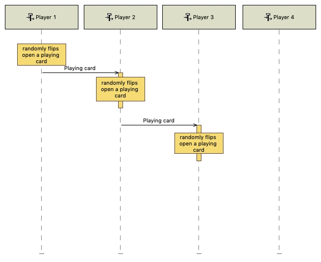
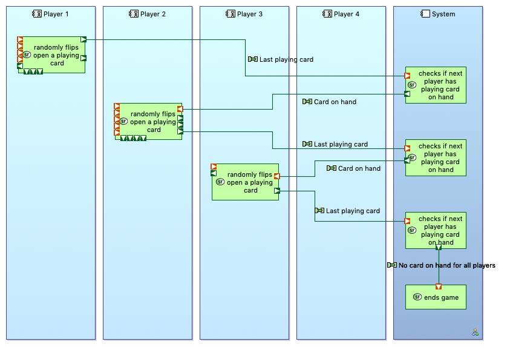

Description
Players start to run out of the playing cards they have on hand one by one (Player 4, then Player 1, then Player 2, then Player 3), though this does not necessarily happen in order of play. When they run out of cards they just get skipped over while the other players continue to play cards, if they have any. Eventually it reaches a point where all players run out of playing cards, and that’s when the game ends.
Initial State
Players are in the midst of a playing stage, and Player 4 has already run out of playing cards. Player 1 is due to go next.
Operational Analysis
System Analysis
